This Issue
August 2026 edition
116 vs 276
Homes acquired by flippers this edition versus the same two months a year ago; 141 were sold, a net −25 to flip inventory
Flippers bought 116 homes against 276 a year ago — the restocking gap turned negative
Flippers bought 116 homes this edition against 276 a year ago, while selling 141 — a net −25 to flip inventory versus +25 a year ago. Exits are slower too: median hold ran 218 days against 181, and the count of distinct selling operators fell to 110 from 180. Resale pricing held up, with the median flip at $250,000 versus $226,000, so the binding constraint reads as acquisition rather than demand. Counts lag 4–8 weeks and the newest month can grow up to ~15%, but the buy-side gap is wider than backfill explains.
Investor Playbook
What this issue's numbers suggest checking, by investor type. Observations from recorded data — not investment, legal, or tax advice.
Fewer buyers, wider spreads — verify the exit before you tie up
Wholesalers
Only 5 assignments surfaced on recorded deeds, a floor, but the median spread was $16,000 against $11,750 a year ago. With flipper acquisitions at 116 versus 276 and only 110 operators taking exits, the buyer list is thinner than the spread suggests. The data suggests concentrating on 53218, 53216, 53209 and 53206, where buys cluster at $128,000–$131,000 medians ($70,000 in 53206), and confirming a funded buyer before contracting.
Underwrite 218 days, not 181
Flippers
Median hold on this edition's exits was 218 days versus 181 a year ago, with 30% over a year. Sale-to-assessed at 1.52 and a $250,000 median resale show pricing is holding, but carry is the variable that moved. Worth checking whether your model still works at 12 months on the typical unit here: 1,286 sqft, 3 bed, median year built 1945, with 54% of exits pre-1950.
Small multi basis is the cheapest square footage on the board
Landlords
2-4 units traded 233 times at a $193,000 median and $89/sqft, against $151/sqft on single family. With flipper buying down to 116 homes, competition at the $130,000 band in 53218 (67 buys), 53216 (48) and 53209 (39) is lighter than a year ago. The data suggests testing offers on pre-1950 stock that flippers are currently passing on rather than chasing the retail-priced exits.
Extension demand is the visible gap
Private lenders
Nine private loans were recorded versus 17 a year ago, at a $195,000 median. Across the trailing 12 months, 70.3% of observed investor purchases carried financing, 60.4% of those included rehab funds, median loan $170,000 at a 1.12 loan-to-price. With holds at 218 days and flip inventory at 2,599 units, bridge extensions and takeouts on aged projects look like the segment the recorded book is not covering. Terms and rates are not in the public record.
Apartment 5+ pricing sits between the two rental basis points
Multifamily investors
Thirty-seven apartment 5+ purchases cleared a $545,000 median at $109/sqft, above the $89/sqft on 2-4 units and well under the $203/sqft on condos. Small multi made up 17.7% of flip exits versus 18.7% a year ago, so flip-side supply of renovated 2-4s is flat in share and down in count. Worth checking whether buying unrenovated small multi at the $89/sqft basis beats the $109/sqft five-plus entry for your operating model.
Factoids
Numbers from this period a practitioner would repeat to a colleague. Each computed directly from recorded instruments.
$212,000 — Median investor purchase price, 843 recorded buys
trending down · was $243,050 a year ago on 818 buys
Volume is slightly above last year while the median price sits about $31,000 lower. Acquisition basis is moving down even as flip resale medians move up.
110 operators — Distinct sellers behind this edition's 141 flip exits
trending down · vs 180 operators a year ago
Roughly 40% fewer names carried exits, but concentration barely moved — the top ten took 24.8% of flip revenue versus 25.3% a year ago. Fewer competitors are bidding on the same product.
$105,000 — Median gross flip margin (rehab and carry not in public record)
trending up · was $96,000 a year ago
Dollar margin rose while margin percentage slipped to 72.7% from 76.3%, consistent with a higher basis on each deal. Sale-to-assessed ran 1.52 versus 1.44.
$89/sqft — Median price per square foot on 233 two-to-four unit purchases at a $193,000 median
holding steady · vs $151/sqft across 501 single-family purchases
The small-multi basis gap remains the widest product-mix spread in the file. Condo purchases cleared $203/sqft on 71 deals.
12% — Share of investor purchases from out of state, at a $158,100 median
holding steady · vs 81% local at a $222,000 median
Out-of-area buyers took 19% of purchases in total and bought well below the local median price. Top feeder states were CA (28), IL (25) and NY (9).
31 notes — Seller-financed notes recorded, median $280,800
trending up · vs 18 notes at a $154,000 median a year ago
Recorded private loans went the other way, 9 versus 17, at a $195,000 median. Seller paper is currently the more visible non-bank channel in the deed record.
Market Activity — Investor Purchases
Monthly count of investor purchases of MSA properties (left axis) and the median purchase price (right axis), trailing 13 months. The most recent month can grow up to ~15% as late recordings arrive.
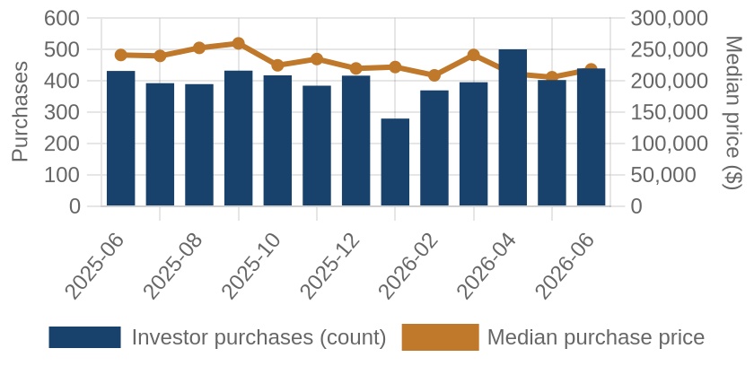
Investor purchases per month (bars) and median purchase price (line), trailing 13 months.
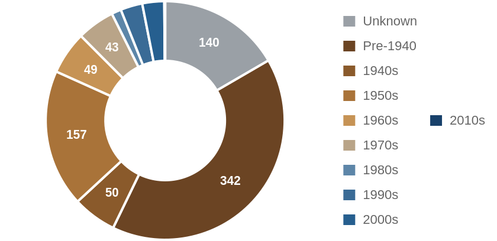
Which vintage of housing investors bought this edition, by decade built.
Where the Money Went
The geography of the period's investor activity: which zip codes saw the most recorded deals, and the largest individual transactions at street level.
The 8 busiest zip codes for investor deals
Pins rank the busiest zips by recorded investor deals (purchases + flips of existing homes) this period — #1 busiest; orange = top 3; pin size scales with deal volume. Median buy is the typical investor purchase; median sale the typical flip resale. Click a pin for details; full table below.
| # | Zip | Area | Purchases | Flips | Median buy | Median sale |
|---|
| #1 | 53218 | Capitol Heights | 67 | 14 | $131,000 | $231,500 |
| #2 | 53216 | Grasslyn Manor | 48 | 8 | $130,500 | $265,000 |
| #3 | 53209 | Havenwoods | 39 | 15 | $128,000 | $146,400 |
| #4 | 53206 | Amani | 44 | 8 | $70,000 | $99,100 |
| #5 | 53208 | Washington Heights | 40 | 4 | $136,250 | n/a |
| #6 | 53210 | Sherman Park | 37 | 6 | $139,900 | $188,500 |
| #7 | 53207 | Bay View | 34 | 6 | $290,000 | $337,500 |
| #8 | 53212 | Riverwest | 35 | 4 | $170,000 | n/a |
A representative deal in each of the busiest zips
One deal per zip: the largest matching this market's typical house (typical for this market: 1247 sqft, 3 bed, built around 1951; priced within 4x the county assessment and under 5x its own zip's median).
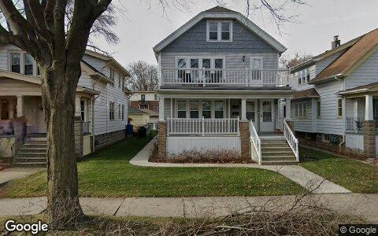
$506,000 · Purchase
3469 S INDIANA AVE # 3471, Milwaukee WI 53207
2-4 units · 1,944 sqft · May 1
Street View Dec 2022 — before the purchase
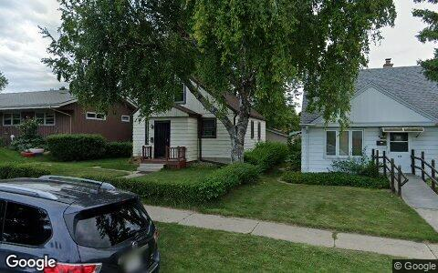
$474,000 · Purchase
4257 N 67TH ST, Milwaukee WI 53216
Single family · 1,151 sqft · Jun 29
Street View Sep 2019 — before the purchase
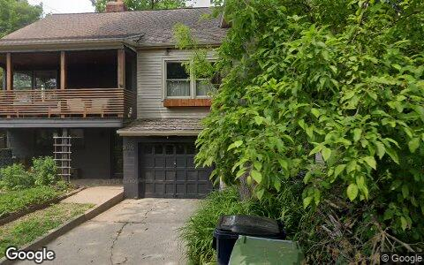
$444,000 · Purchase
3065 N GORDON CIR, Milwaukee WI 53212
Single family · 1,507 sqft · May 6
Street View Jun 2025 — before the purchase
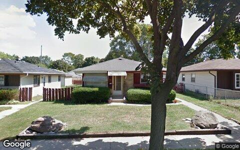
$295,000 · Purchase
5908 N 75TH ST, Milwaukee WI 53218
Single family · 1,154 sqft · Jun 25
Street View Aug 2011 — before the purchase
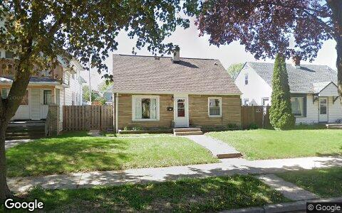
$275,000 · Purchase
6421 W MOLTKE AVE, Milwaukee WI 53210
Single family · 1,389 sqft · May 4
Street View May 2025 — before the purchase
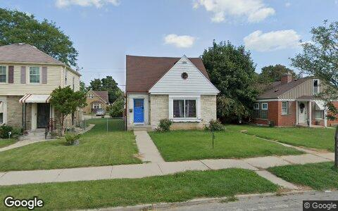
$260,000 · Purchase
4208 N 19TH PL, Milwaukee WI 53209
Single family · 1,346 sqft · Jun 22
Street View Sep 2022 — before the purchase
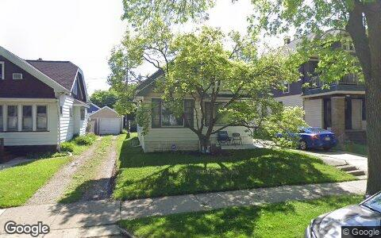
$240,500 · Purchase
1308 N 55TH ST, Milwaukee WI 53208
Single family · 1,143 sqft · May 18
Street View May 2025 — before the purchase
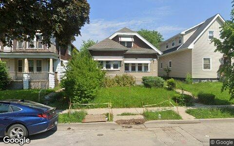
$178,600 · Flip
3842 N 13TH ST, Milwaukee WI 53206
Single family · 1,245 sqft · May 28
Street View Jun 2025 — before the purchase
Deal sheet — private lending, in date order
Private loans recorded against residential property this period, oldest first.
| Date | Lender | Amount | Property | Use |
|---|
| May 1 | Patch Craig | $30,000 | 6421 W Leroy Ave, Milwaukee WI 53220 | Single family |
| May 8 | Ruiz Louis | $397,100 | 2463 N 85TH ST, Milwaukee WI 53226 | Single family |
| May 15 | Alps Condo Group LLC | $195,000 | 3121 N 105TH ST, Milwaukee WI 53222 | Single family |
| Jun 3 | Haverhill Volunteer Fire Depar | $29,876 | 5231 Millbank RD, Greendale WI 53129 | Single family |
| Jun 26 | John J and Jane A Kluesner Joi | $332,838 | 2828 N 88TH ST, Milwaukee WI 53222 | Single family |
Largest flip margin deals of the period, at street level
Gross margin = recorded sale price minus the flipper's recorded purchase price. Purchase deeds are recoverable for roughly 4 in 10 flips; rehab and carry costs are not public record.
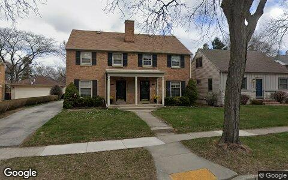
$411,000 gross · bought $242,000 (Jul 2025) → sold $653,000
8400 STICKNEY AVE, Milwaukee WI 53226
Single family · 2,640 sqft · May 19
Street View Apr 2025 — before the flip (pre-renovation)
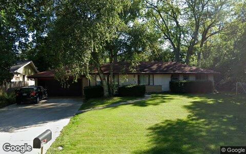
$348,000 gross · bought $237,000 (Dec 2025) → sold $585,000
519 W MONTCLAIRE AVE, Glendale WI 53217
Single family · 2,056 sqft · May 7
Street View Sep 2022 — before the flip (pre-renovation)
$320,000 gross · bought $155,000 (Aug 2025) → sold $475,000
20365 W NATIONAL AVE, New Berlin WI 53146
Single family · 1,616 sqft · May 28
Street View May 2025 — before the flip (pre-renovation)
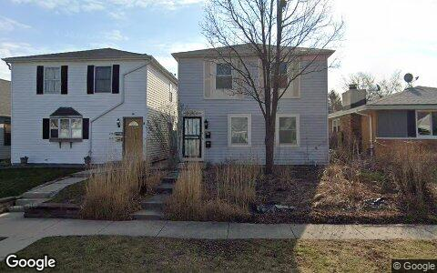
$253,500 gross · bought $96,500 (Feb 2026) → sold $350,000
2436 S 75TH ST, Milwaukee WI 53219
Single family · 1,800 sqft · May 22
Street View Apr 2025 — before the flip (pre-renovation)
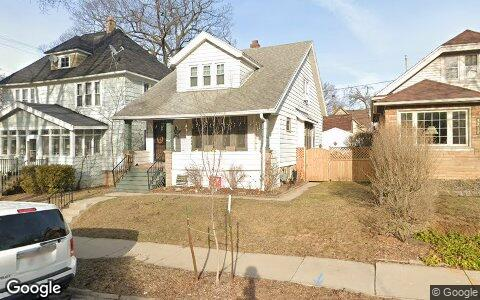
$242,500 gross · bought $307,500 (Feb 2026) → sold $550,000
3204 S DELAWARE AVE, Milwaukee WI 53207
Single family · 1,596 sqft · Jun 9
Street View Mar 2025 — before the flip (pre-renovation)
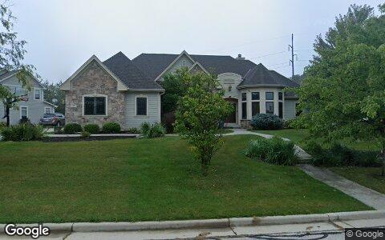
$240,000 gross · bought $710,000 (Jan 2026) → sold $950,000
560 BIRCHWOOD DR, Hartland WI 53029
Single family · 4,110 sqft · May 18
Street View Sep 2025 — before the flip (pre-renovation)
Flip Structure — Year over Year
How the flip market itself is changing: margins, who is doing the flipping, what they flip, and where. Same two calendar months, this year vs last, from the current data extract.
| Flip market structure | Same months last year | This edition |
|---|
| Flips sold | 251 | 141 |
| Median sale | $226,000 | $250,000 |
| Median $/sqft | $183 | $191 |
| Sale vs county-assessed | 1.44× | 1.52× |
| Median gross margin (matched buys) | $96,000 | $105,000 |
| Median margin % | 76% | 73% |
| Median hold | 6.0 mo | 7.2 mo |
| Homes bought by flippers | 276 | 116 |
| Net to inventory (bought − sold) | +25 | −25 |
| Active flippers | 180 | 110 |
| Top-10 flippers' revenue share | 25% | 25% |
| Median house: sqft / beds / built | 1415 / 3 / 1949 | 1286 / 3 / 1945 |
| Pre-1950 stock share | 53% | 54% |
| 2–4 unit share | 19% | 18% |
| Median distance from downtown | 10.5 km | 10.5 km |
Homes bought counts every deed recorded to a known flipper in the window, resold or not. Net to inventory is that minus flips sold. The standing stock is in the Flip Pipeline section.
Attributed profit per flip (per-investor aggregates, by drop period): Feb 26→Jun 26: 397 flips, $78,571/flip · Jun 26→Aug 26: 150 flips, $97,558/flip.
County mix (share of flips, last year → this edition): Milwaukee 86%→88% · Waukesha 12%→11% · Washington 2%→1%.
Biggest zip share moves: Waukesha West 3.6%→0.0% · Waukesha 0.4%→3.5% · West Allis 3.6%→5.7% · Greenfield 2.8%→0.7% · Wauwatosa East 2.0%→0.0% · Silver Spring 1.6%→3.5%.
Flip Pipeline — Buying, Selling and Inventory
Homes bought by known flippers and homes they resold, per month, alongside the stock sitting in flipper hands. A house enters inventory when a flipper buys it and leaves on the next recorded sale, at any price. Purchases still unsold after five years are treated as holds and drop out.
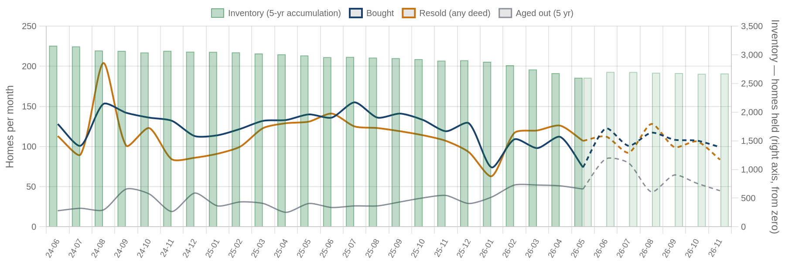
Solid = recorded, dashed = projected. Green bars are inventory on the right axis: homes bought and not yet resold. Aged out is purchases passing five years unsold. Inventory moves by bought minus resold minus aged out.
| Flip pipeline | Bought / mo | Resold / mo | Aged out / mo | Inventory |
|---|
| Latest recorded month (2026-05) | 74 | 107 | 47 | 2,599 |
| Projected (2026-11) | 99 | 84 | 45 | 2,673 |
Method: a straight-line trend through the last 24 months, adjusted for the month of the year, shown dashed as a projection. The series stops before the newest month or two, where deeds are still recording.
Who's Funding the Deals
First mortgages open on flipper purchases from Jul 2025 – Jun 2026 that have not yet resold. 70% carried recorded debt; the rest closed cash or off-record. Ranked by deal count.
70%
Purchases financed
536 of 762 flipper purchases carried a recorded first mortgage
$170,000
Typical loan
median 1.12× the purchase price — the median lender advances rehab money on top of the buy
60%
Funding the rehab too
324 of 536 loans exceed the purchase price, so the lender is covering work as well as the buy
| Lender | Loans | Borrowers | Median loan | Loan vs price | Funds rehab | Median purchase |
|---|
| MACH1 Lending LLC | 57 | 36 | $165,000 | 1.31× | 79% | $130,000 |
| Good Faith Funding LLC | 51 | 21 | $179,925 | 1.22× | 96% | $143,000 |
| Kiavi Funding INC | 47 | 18 | $167,900 | 1.60× | 89% | $105,000 |
| Arc Capital Fund LLC | 14 | 8 | $155,000 | 1.40× | 86% | $132,250 |
| Summit Credit Union | 13 | 4 | $517,000 | 0.90× | 8% | $575,000 |
| Oshana Trevor | 10 | 1 | $785,600 | 0.92× | 0% | $855,400 |
| F Street Investments LLC | 9 | 7 | $146,000 | 1.49× | 89% | $130,000 |
| United Wholesale Mortgage LLC | 8 | 3 | $144,150 | 1.19× | 75% | $114,000 |
| Bluebird Lending LLC | 7 | 2 | $97,500 | 1.71× | 86% | $55,000 |
| Loan Funder LLC | 7 | 4 | $167,350 | 1.06× | 71% | $146,500 |
Rates and terms are not published: the county feed models both. Borrowers counts the distinct flippers on each lender's book. Loan vs price is the recorded first mortgage divided by what the buyer paid. Above 1.00x the lender is funding purchase plus rehab; below it the buyer brought cash to the table. Blanket mortgages covering several parcels are excluded, as are loans outside 0.1x-3x the price. Rates and points are not public record.
Flipper Profile — The Working Flipper
The 70th–90th percentile of local flippers by lifetime flip count — the established operators below the whales: 3–7 lifetime flips each. Bath counts are not in the assessor extract.
221
Flippers in the band
each with 3–7 lifetime flips (avg 4.0)
$88,000
Median gross margin
1,441 flips matched to their purchase price
5.1 mo
Typical hold
purchase to resale, matched deals
1247 sqft · 3 bd
Typical house
median year built 1951
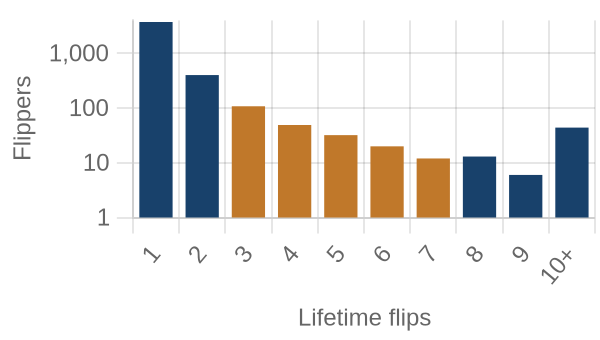
flippers by lifetime flips · orange = this band
Where they work: Capitol Heights (53218) 8% · Havenwoods (53209) 6% · Brown Deer (53223) 6% · Grasslyn Manor (53216) 4% · Timmerman West (53222) 4%.
Market Pulse
| per month, Feb–Jun 2026 | per month, Jun–Aug 2026 | change | avg/mo 2yr | avg/mo 4yr |
|---|
| ▼ Homes bought by flippers | 138 | 58 | -58% | 123 | 129 |
| ▼ Flips sold (deeds) | 126 | 71 | -44% | 114 | 117 |
| ▲ Lending deals funded | 10 | 40 | +316% | — | — |
| ▲ Seller/notes held (net) | 11 | 49 | +331% | — | — |
| ▲ Investors (net) | 126 | 6,749 | +6,623/mo | — | — |
Flips and flipper purchases = recorded deeds, same two months each year; their 2- and 4-year columns are per-month averages of the deed series. The remaining rows come from the investor file, which spans 13 months, so they have no multi-year average (2026: Jun 2026 → Aug 2026; 2025: Feb 2026 → Jun 2026).
Past Issues
Methodology
Source Data
County recorder & assessor via FARES
Every figure is computed from recorded instruments (deeds, mortgages, assignments) and assessor property records for the five counties of the Milwaukee-Elyria MSA. No surveys, no estimates, no listings data.
This edition analyzes transactions dated May 1 – June 30, 2026, as recorded through the 2026-08 data extract.
Who Counts as an Investor
Transaction-pattern identification
Investors are entities whose recorded transaction history looks like investing: rental holding (landlords), short-hold resales (flippers), private mortgage lending, note holding, or contract assignment (wholesalers). Banks, homebuilders, iBuyers, SFR funds, and government entities are identified by name and reported separately from small investors.
How Comparisons Work
Attribution deltas + same-window comparisons
The Market Pulse reports activity attributed between successive data drops, from the per-investor lifetime totals maintained upstream — periods differ in length, so per-month rates are shown. Elsewhere, "vs. year ago" compares the same calendar months one year earlier, counted from the same data extract. Transfers under $5,000 (quitclaims, partial interests) are excluded everywhere. Counts lag recording by 4–8 weeks, and the newest month can grow up to ~15% as late records arrive — direction is reliable before magnitude.
Known Limits
Floors, not ceilings
Wholesale assignments only appear when they touch a recorded deed, so those counts are a floor. Flip hold times are measured from the prior recorded sale. Names are the owner of record, which may be an LLC or trust.
About
Purpose
A working tool for small real estate investors in Greater Milwaukee: what actually closed, where, at what prices, and what it suggests checking next — one theme per issue.
Cadence
Published with each bi-monthly data drop, covering the two most recent complete months of recorded activity.
Disclaimer
Observations from public records, not investment, legal, or tax advice. Past activity does not guarantee future results. Verify any property or counterparty independently before transacting.